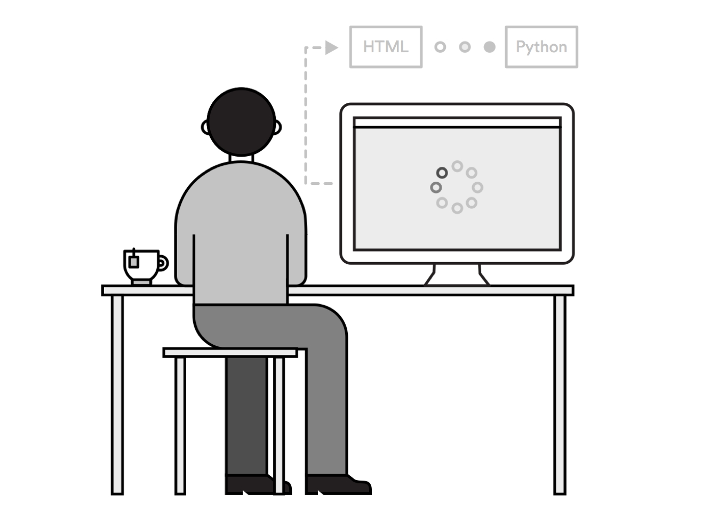

Welcome to
Code in 1 Day
Instructor: Kate Shirley
Let's get started!
About me
- Front-End Developer at Cramer-Krasselt
- Former GA WDI Student
- Past lives include account-side advertising/PR, nonprofit fundraising, teaching English in Korea
THE PLAN
Objectives
- Learn fundamentional HTML elements and their properties.
- Learn how to style those elements using CSS.
- Create our own static webpages with HTML and CSS.
- We will also talk about deploying static sites, development philosophies to consider and what you should learn next.
Agenda
- What is Web Development
- Front-End Languages
- Intro to HTML
- HTML Document
- Intro to CSS
- CSS Layouts
- Lab
- Deployment
- What next?
Before we get started...
- Download Sublime
- Download Chrome
- Create an account on codepen.io
Throughout the day...
- Ask questions!
- Make mistakes!
- Also don't be afraid to answer my questions :)
- Google is your best friend
A (mini) Icebreaker
Tell us your name and what brought you here today
Why Learn This Stuff?
This is the language of the internet. While you may not be building entire websites, understanding the basic elements of a webpage will help you format Wordpress posts, advertising code, or be able to tweak existing websites and code.
You never know...
How does the world wide web work?
Clients, servers, responses, requests

The Internet and the Web
Browsers
Developers (namely, front-end developers) have to decide which browsers they want their webpages to look the best in.

Browser stats

Front-End vs.
Back-End
Front-End
- Code is rendered by the client (your browser)
- Describes content, presentation, and behavior
- Examples: HTML, CSS, JavaScript
Back-End
- Code is interpreted on the server
- Handles, data stores, state, business logic
- Passes content to the front-end before rendering in the browser
- Examples: Ruby, Python, PHP
Front-End and Back-End

Front-End and Back-End
Front-End and Back-End
Front-End and Back-End
Front-End Languages
Front-End Languages
| Language | Description | Kind of like... |
|---|---|---|
| HTML | Defines the content | Foundation, walls, and roof of a house |
| CSS | Assigns the styles | Carpet, paint, colors |
| JavaScript | Create interactions and animations | A doorbell, a light dimmer |
Group Practice
Let's pull up Lyft.com
- What language determines that the "Become a Driver" button is pink?
- When you hover over "Explore" in the menu, what language causes the arrow to flip over and the sub menu to slide out?
- What language determines that there's a "Sign Up to Ride" link?
Partner Practice
Pull up the New York Times website with a partner, and look at some of the home page elements together. What kind of content do you see? What does the styling look like? What about interactions? Talk about what languages are affecting the site elements. (5 minutes)Web Development Workflow
- The website goes through several interations between UX and Design, I am delivered design files
- Use HTML, CSS, and JavaScript to code the page to the client specs
- Besides "how it looks", Front-End developers must consider accessibility, performance, cross-browser and cross-device functionality
HTML: Hypertext markup language
What is HTML?
- Establishes the structure of a webpage
- Describes the page's content in a way that the browser can format
- HTML is made up of "tags" that surround the pieces of our content to describe what it is
Why is HTML important?
- Literally the building blocks of the webpages
- You manipulate your HTML content by referencing it with CSS and Javascript
- You master HTML by understanding which tags are best for which types of content
HTML Syntax

Headline Tag
I'm a Large Headline!
- Opening Tag
- Closing tag with backslash
- Desired content between
HTML Intro Codealong
As we learn some of the most commonly used tags you will practice along in codepen to see the tags come to life - and the default styles and behavior from the browser.First tag:
Type any headline you want!
6 Headline Sizes
Most Important Headline
2nd Most Important Headline
3rd Most Important Headline
4th Most Important Headline
5th Most Important Headline
Least Important Headline
Try each in codepen. Look at the different sizes the browser gives to each one.
Paragraph Tag
I'm a paragraph. I'm a block of text with sentences.
I want to break it up!
No closing tag. Should only be used on copy.
Place a br tag in your paragraph.
Nesting Tags
HTML is hierarchical and can be nested.
Check out this code for an "ordered list".
- This is an ordered list!
- You will see numbers, in order.
- I'm the third item on the list
Okay, but what if I don't want numbers?
UNordered list to the rescue!
- This is an ordered list!
- Look at those numbers, in order!
- I'm the third item on the list
Tags with attributes
Image Tag

- property="value"
- src attribute
- alt attribute
- no closing tag
- Try in codepen, with source "http://lorempixel.com/400/200"
Anchor (or link) Tag
Click Me
- href attribute
- wrapped link description
- don't include attributes in closing tag
- try it in codepen with a link to General Assembly
HTML Lab Time
Codepen practice
Explore, add, subract, "break" this page with any tags you'd like to practice with (10 minutes)
Idea: how would you make an image a link? (Hint: Nesting!)
Idea: Use google to research other tags like header, footer, article, section, etc.
Semantic html tags vs. semantic-less html tags
Semantic tags are what they say they are. You shoud avoid using inaccurate tags. Examples include article, footer, header, main, nav, section, aside, etc.
Semantic-less tags are used purely for the sake of the developer to section content off for styling.
Examples: div, span.
HTML DOCUMENT SYNTAX
Why is this important?
Codepen is great for quick practicing, but when writing our own HTML pages we will need to follow a typical html document structure so the browser knows it's an HTML doc.Boilerplate HTML
<!DOCTYPE html>
<html>
<head>
<meta charset="utf-8">
<title>My Webpage</title>
</head>
<body>
<h1>Hello world</h1>
<p>All of the tags we just practiced go between the
body tags.</p>
</body>
</html>
What new tags do you see? Let's learn what they each do...
| Tag | Usage | Notes |
|---|---|---|
| doctype | <!DOCTYPE: html> | Tells the browser that the document is HTML5. Should be the first tag in the document. |
| html | <html> | Parent element for all other elements on the page. |
| head | <head> | Parent element of all the metadata-nothing here is rendered on the screen, it's all for the browser. |
| body | <body> | Parent element of page content. All tags we just practiced would go between these tags, and would get rendered to the screen. |
Meta Tags
| Tag | Usage | Notes |
|---|---|---|
| title | <title> | Sets the title for the web page. Rendered by the web browser in the tab, and by search engines. |
| meta | <meta> | Can set various metadata attributes of the page,such as character set. |
HTML document codealong
Create Our Project Structure
- Create a new folder on your desktop and call it My Website
- Open Atom, and open a new untitled document
- Save the document as "index.html"
Type the following code exactly as you see, double checking for syntax and spelling typos.
<!DOCTYPE html>
<html>
<head>
<meta charset="utf-8">
<title>My Webpage</title>
</head>
<body>
<h1>Hello world</h1>
<p>This is where all your content goes.</p>
</body>
</html>
Test the setup
- Save your code
- Open your My Webpage Folder, and then open your index file. (You may need to right click and "Open With...Chrome")
- A Chrome browser window should open and you should see your headline and paragraph. Woohoo!
- Something not right? Debug!
HTML Content Lab
Start creating website about anything you want, using the following tags:
- 1 H1 Tag, 2 other H tags
- 2 links
- 1 image
- 1 list
- Research and use other tags, think about what you need to structure the content for your particular site.
As time allows, add more content. Google will be your best friend!
Okay, so our site has good content.
...but it's ugly :(
Let's give it a makeover with CSS!
CSS: Cascading Stylesheets
What is CSS
- Adds a presentational layer to our pages.
- Provides the browser with rules for how our content should be displayed, by attaching styles to the HTML we write.
- All our CSS needs to go in a .css file, and that file be referenced from our HTML.
- So fun! Colors, small animations, vector graphics - explore codepen for ideas.
Css syntax

Css syntax
h1{
color: red;
font-size: 60px;
}Hey I'm styled
Common Basic Properties
| Property | Example Value |
|---|---|
| font-family: | 'Helvetica', sans-serif; |
| text-align: | center; |
| text-decoration: | underline; (basic decorations) |
| border: | 2px solid black; (width, style, color) |
| padding: | 20px 40px; (top/bottom, left/right) |
| margin: | 50px auto 20px; (top, left/right, bottom) |
| width: | 600px; |
Choosing colors in CSS: 3 Ways
- Named colors: "red", "blue", google others.
- RGB, or RGBA values: 3 numbers representing color and opacity. Example: rgba(255, 200, 15, .5)
- Hex codes: A # plus a 6 digit alphanumeric code. Example: #F2A489
Css Codepen Practice
Add the properties from the previous slide to an h1 tag. Use the example properties, test your own, or look up other properties and values online. (10 minutes)
Bonus: Let's add a hover state with a transition!
h1 {
background-color: grey;
transition: all .2s ease-in;
}
h1:hover {
background-color: tomato;
}
Css in 3 ways
unless it's a very tiny project, an external stylesheet will be best practice.
- Inline: Included as an attribute on html tags.
- Internal Stylesheet: Included between the head tags
- External Stylesheet: A .css file is linked to the html file
Let's Link an external stylesheet and test it
Creating a stylesheet
- Open a new file in Atom
- Save as "style.css" in your My Website folder
- Double check name and location in finder
Accessing Stylesheet in HTML
Add this code to the end of your "head" section
<!DOCTYPE html>
<html>
<head>
<meta charset="utf-8">
<title>My Webpage</title>
<link rel="stylesheet" href="style.css">
</head>
- The rel attribute specifies the relationship between the HTML page and the file it is linked to.
- The href attribute specifies the path to the CSS file.
Add CSS Code and Test
Write two simple styles for your H1 tag in the css file
h1{
color: red;
font-size: 60px;
}- Save the document.
- Open the index.html file with chrome (or refresh an open window), and you should have a large, red H1.
- You've just linked an external stylesheet!
Classes and IDs
Targeting specific elements
Classes and IDs allow us to assign "labels" to elements for targeting
They are created as attributes in HTML, and then used as selectors in CSS
IDs
- Ids are used to target one specific element.
- Each element can only have 1 Id.
- The Id name can only be used once per page.
ID Example
- Just a regular list item
- I'm a special bordered item!
- Regular again
li {
font-size: 12px;
}
#special {
border: 1px solid black;
}
- Use "#" with the ID name to use in CSS
- The second list item will have all of the li styles, and the border as applied by the #special id.
Classes
- Classes are used to group elements together.
- Elements can have multiple classes.
- The class name can be applied to as many elements as you need.
Class Example
My Site
Here's some information about me.
More information about me.
- This list is a different tag type than p,
but will have similar style.
.description{
font-family: sans-serif;
margin: 10px 20px;
}
Use . with the class name to use in CSS
Partner Practice Part 2
Pull the New York Times website back up. Can you tell which elements are part of the same class? What unique elements might have an id? Talk about HTML elements you see as well.
Creating Layouts with CSS
The Box Model
Everything is a Box.
Every tag is a Box

Box Model Elements
| Property | Description |
|---|---|
| Border | Every box has a border, even if it’s not visible or specified to be 0px wide. |
| Margin | Margins sit outside the border. You can set the width of a margin to create space between the borders of two adjacent boxes. |
| Padding | Every box has a border, even if it’s not visible or specified to be 0px wide. |
Block vs. Inline Elements
Block vs. Inline Elements

- Block-Level elements will always start on a new line. Examples: h1-h6, ul, li, p, ol, div
- Inline elements will continue on the same line as thier other inline neighbors. Examples: a, img, span
Why does box sizing and block vs. inline matter?
When designging layouts in CSS, you need to know the default behavior of your elements in order to make thoughful styling decisions. You're able to override default display with the "box-model" and "display" properties in CSS.
Positioning
Position Property
img {
position: relative;
}- Static: Default
- Relative: Positioned relative to its default position
- Fixed: Doesn't move when you scroll
- Absolute: Similar to fixed, but positioned relative to the window.
- See the tutorial for code examples: https://css-tricks.com/almanac/properties/p/position/
Floats
img {
float: right;
}Floating originally started with the intention of having an image off to the side with text flowing around it - like a magazine. It takes an element out of the normal flow and moves it either left or right.

Flexbox
What is Flexbox?
nav {
display: flex;
}Flexbox is a CSS layout mode that provides a more efficient way to lay out, align and distribute space among items in a container, even when their size is unknown and/or dynamic (thus the word "flex").
Flexbox Froggy Tutorial
http://flexboxfroggy.com/
Build a Menu with Flexbox
http://tinyurl.com/flexmenukate
Codealong
Self-Guided Lab
Website Lab
We have covered A LOT so far today (and have more!), please use this time to apply some of the concepts to your working site. Ideas to get you started...
- Add classes and IDs to your element and style them in CSS.
- Add a menu with a list of links
- Use positioning to "stick" a header to the top or footer to the bottom
- Create hover states for links, buttons, images
- Dig into CSS documentation
Are you stuck?
Well, this is your life now
I will be walking around to provide hands-on assistance, but try debugging first!
- Check your code syntax: do you have semi-colons, space, punctuation in the right place?
- Check your spelling: are your class/IDs spelled the same in HTML and CSS?
- Think about default inline, block, box-model behavior - refer to documenation
- Google your problem, Stack overflow is very helpful
You've Got a website, now what?
Static Site Deployment
Options for Deploying Your Site
- Purchase a domain and server space with a web host
- Host on Github
- Use a static deployment service like Bit Ballon.
Where do I get a domain?
- A domain is a registered URL that points to your site files on your server
- You pay for domain registration on an annual basis
- I like gandi.net and namecheap.com
Why do I need a host?
- Your site files need to "live" somewhere in order for everyone to be able to access them.
- Different companies have different packages based on storage, number of sites and users.
- I'd probably avoid GoDaddy, and I use MediaTemple at the office.
- Look for the "Seriously Comprehensive Guide to Choosing a Web Host on webdesign.tutsplus.com.
GIthub.io Site
- Github is version control software that allows you to store your code remotely
- Github repositories (projects) are essentially project files hosted on github
- Github automatically dedicates a specific repo name (yourusername.github.io) to being a publicly accessible site
- Follow this tutorial: https://pages.github.com/
BitBalloon: Static Site Deployment
- BitBalloon.com makes it easy to drag and drop a static project into their interface to have a hosted site, instantly
- So let's do that now!

Now you can code!
So, what's next?
Code All Day Every Day
Best Practices to adopt from day 1
- Write lean, clean code (DRY, consistent formatting)
- Document your code (comments/README)
- Version Control your code (get on Github!)
- Code for semantics (use tags as they were intended)
- Code for accessibility (can everyone view your site?)
- Do it right the first time (it will save time in the end)
Philosophies to Consider

- Responsive Design
- Mobile First
- Progressive Enchancement and Graceful Degradation
Resources
- MDN
- CSS Tricks
- Codecademy (get started with Javascript!)
- Dash (General Assembly)
- Shay Howe’s Learn to Code HTML & CSS
- CodePen
- StackOverflow
- Learnlayout.com
- In Person: Meetups, Hackathons, at GA
- WHATEVER WORKS BEST FOR YOU!
Q & A
That's all folks
Thanks for coming!
Kate Shirley - kate.m.shirley@gmail.com